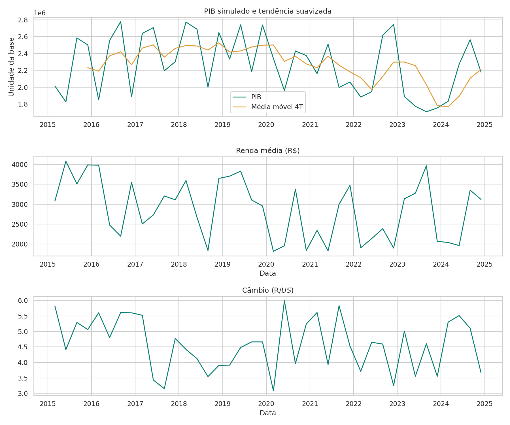
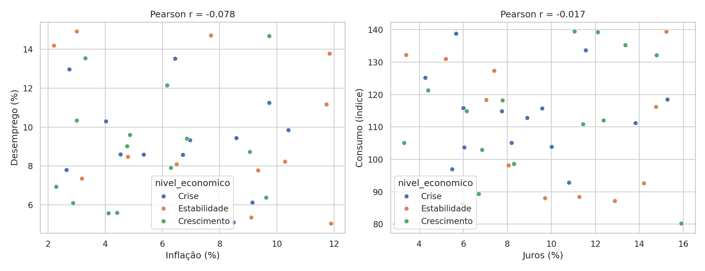
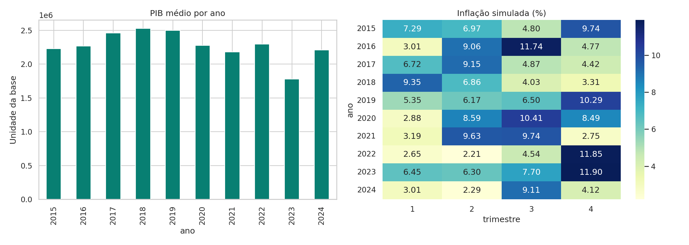

01. Preparar
Validar datas e categorias, remover duplicatas e verificar a granularidade trimestral. A fonte contém 40 registros válidos, sem ausências.
Aluna: Lorrane Goulart
Professor: Alexandre Neves Louzada
Uma investigação de indicadores econômicos em 40 trimestres: evolução do PIB, comportamento dos preços e relações entre renda, juros e consumo.
2015 — 202410 indicadoresBase simuladaComo o PIB evoluiu? Inflação e desemprego se relacionam? Juros e consumo se movem juntos? Este projeto utiliza Python para preparar, analisar e apresentar uma base econômica trimestral.
Dados simulados fornecidos para a atividade. Os resultados não descrevem a trajetória real do Brasil, nem permitem recomendações econômicas.

Pearson r = -0.078. Associação contemporânea observada na simulação.
Pearson r = -0.017. O resultado não demonstra impacto causal da taxa de juros.


As barras representam médias trimestrais por ano, não o PIB anual.
No recorte de 40 trimestres, o maior PIB ocorre em 2016-T3. A correlação inflação–desemprego é -0.08 e juros–consumo é -0.02. O maior coeficiente de variação dos níveis é de Inflação (%). Há 14 registros rotulados como Crise pela fonte. Essas associações não demonstram causalidade. A base é simulada, os rótulos não equivalem a uma classificação oficial de recessão e não permitem diagnosticar a economia brasileira real.
Validar datas e categorias, remover duplicatas e verificar a granularidade trimestral. A fonte contém 40 registros válidos, sem ausências.
Calcular KPIs, variação trimestral, média móvel, correlações e dispersão relativa. Comparar indicadores com normalização explícita.
Dashboard Streamlit com quatro filtros, gráficos Plotly, Matplotlib e Seaborn, tabelas e conclusão dinâmica.
Recursos avançados: persistência SQLite com SQLAlchemy, correlação estatística e média móvel temporal.
A escala do PIB e do comércio exterior não está especificada. Não há ajuste sazonal ou deflator. Rótulos de crise são preservados da fonte.
Os links do repositório e do dashboard serão exibidos após a configuração da publicação.